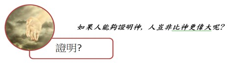

上帝
自從造天地以來, 神的永能和神性是明明可知的, 雖是眼不能見, 但藉著所造之物, 就可以曉得, 叫人無可推諉. (羅1:20)

- 人要以證明的方法, 去接觸神, 好像是用望遠鏡去看細菌, 用顯微鏡看星球一樣, 若是工具使用錯了, 就永遠無法得到正確的答案, 神也不能用證明來了解.
- 事實為何需要被懷疑呢? 沒有一個人要求依個人證明他有父親, 因為他的存在就證明他父親的存在. 看到一棟房子無須證明都相信一定有人蓋的; 因此, 當看到宇宙萬物的存在及有次序的運行, 更叫人不得不相信有位創物的主宰, 上帝.
- 人類與生俱來都有敬拜神的天性. 神造萬物, 各按其時成為美好, 又將永生安置在世人心裡, 然而神從始至終的作為, 人不能參透. (傳3:11) 然而, 多少基督徒的生命因著認識這位神而改變, 見證神的存在是不容置疑的.
* 人憑著有限的智慧, 活在局部的時間裡, 是無法明白神, 然而藉著神自我的啟示, 才得知祂的部分. 神對摩西說, 我是自有永有的, ……耶和華是我的名, 直到永遠. (出3:14-15) 神自己宣告, 我是首先的, 我是末後, 除我以外, 沒有真神. (賽44:6) 因此, 從神的自我啟示中, 我們認知祂是自有永有獨一, 從開始直到終了永遠存在的神, 祂的名字叫耶和華.
* 由於神太偉大了相對顯出人類的微小, 我們只能藉著祂自我啟示中, 理解神部分屬性:
- 上帝是創造者: 世界的形成, 生命的源頭, 都從祂而來, 祂創造天地萬物, 始之各從其類; 祂創造日月星辰, 始之各從其位. 最後祂創造了人, 並且賜給人生命和思想, 要人管理、享受祂所創造的萬物. 人是神創造的最高峰, 因為人是神照著他自己形像所造的, 同時神在人的鼻孔裡吹了一口氣, 使人成了有靈的活人.
- 上帝是公義者: 祂是完全聖潔無瑕疵的, 祂排斥與污穢, 公義和公平是祂的寶座的根基(詩97:2), 故祂不以有罪的為無罪, 祂是一位忌邪的神. 神是光, 在祂面前毫無黑暗, 所以罪惡無法隱藏, 凡是有罪的, 祂必追討審判.
- 上帝是愛: 神自我宣告說:耶和華是有憐憫、有恩典的神, 不輕易發怒, 並且有豐盛的慈愛和誠實. (出34:7) 神在祂所創造的萬物中, 最愛的乃是人, 正如父母愛子女一般, 甚至超過. 神免費賜給人類一切的需要, 諸如:空氣、陽光、雨水和各樣的福氣. 聖經說:遍地滿了神的慈愛. (詩33:5)